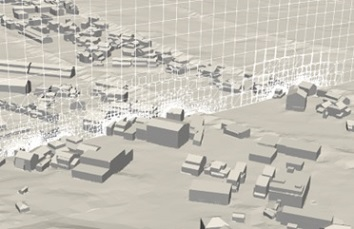
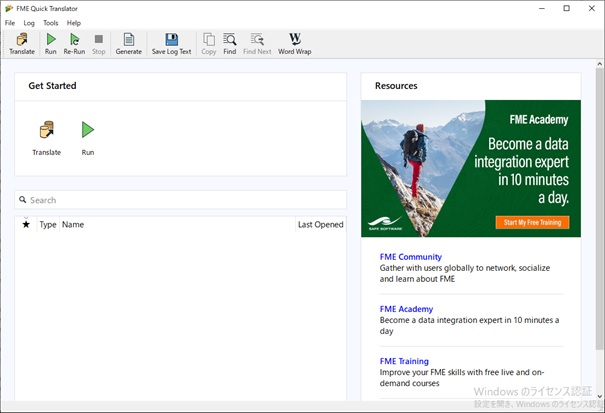
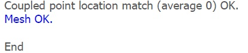
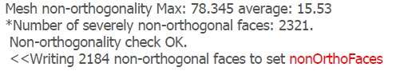

(3) メッシュ作成
(a) 前準備
OpenFOAMのメッシュ作成には、以下の3つのファイルと、STL形式の構造物データが必要となります。

■モデルを囲う格子状のメッシュ（ブロック）を作成する条件ファイル
../CASE/system/blockMeshDict
■メッシュを形状(STL)に合わせるための特徴線の抽出する条件ファイル
../CASE/system/surfaceFeatureExtractDict
■形状に沿って概ね六面体メッシュを自動作成する条件ファイル
../CASE/system/snappyHexMeshDict
■構造物データの保存場所
../CASE/constant/triSurface/○○.stl
具体的なファイルの内容については、以下のサイト等を参照してください。
（参考サイト：PENGUINITIS）
https://ss1.xrea.com/penguinitis.g1.xrea.com/study/OpenFOAM/blockMesh/blockMesh.html
https://ss1.xrea.com/penguinitis.g1.xrea.com/study/OpenFOAM/snappyHexMesh/snappyHexMesh.html
STL形式の地物データは、3D都市モデルの建築物LOD2、地形LOD1をFME Dsektopにより三角形のポリゴンの頂点座標と面の法線ベクトルで構成されたSTL形式のデータに変換して作成しておきます。STLデータはParaViewで可視化できます。
※FME DesktopによるSTL形式ファイルの作成は、FEMにてQuick Translatorを起動し、「Translate」を選択して実施します。

(b) メッシュの事前確認
シェルスクリプトを実行すると自動でメッシュが作成されますが、事前に問題なくメッシュが作成できるかを確認する必要があります。以下の手順でメッシュが作成できるかを確認しておいてください。
➀ Ubuntuのターミナルを起動し、ケースディレクトリに移動してください。

画像の例は、デスクトップ※にケースディレクトリを保存した場合です。
※出力データが大きくなるので、データ容量に余裕のあるドライブに保存してください。
なお、次のケースの計算時には、シェルクリプト「allclean」で削除されます。
➁ ベースメッシュを作成します。
$ blockMesh
問題なければ、以下に「polyMesh」が作成されます。
../CASE/constant/polyMesh
➂ 形状(STL)の特徴線を抽出します
$ surfaceFeatureExtract
問題なければ、以下に「extendedFeatureEdgeMesh」が作成されます。
../CASE/constant/extendedFeatureEdgeMesh
➃ 形状に沿ってメッシュを再分割します。
$ snappyHexMesh
➄ メッシュの品質チェックをします。
$ checkMesh
問題がない場合

問題がある場合

➅ 手順➅で問題がなくなるまで、メッシュ分割の条件を調整します。